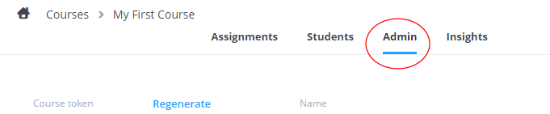
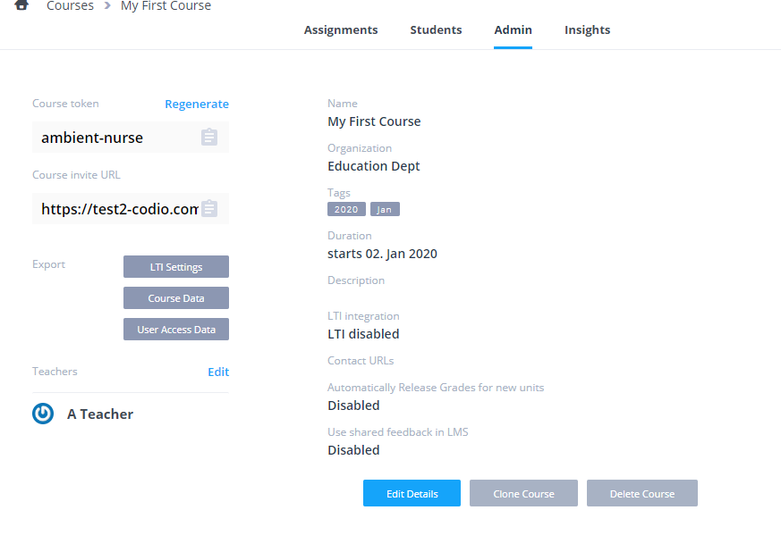
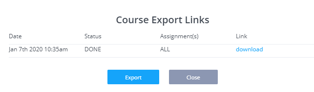
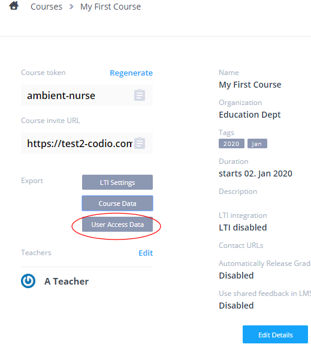

A class has the following properties.
- It is a grouping of students who are taught as a logical group.
- It can have one or more teachers/instructors.
- You can assign projects or course content to it.
- You can access instantly access student code and projects.
- You can integrate the class with any LTI enabled LMS platform such as Canvas, D2L, Moodle, Blackboard and many others. Your LMS can auto-populate classes and grade data can be fed back from Codio to the LMS.
To get started click here
Creating a new class
To work with the classroom features in Codio you will first need to set up a class for your students.
-
Sign in to Codio at www.codio.com
-
If you are in the IDE, click the Codio icon in the top left corner to take you back to the Classes screen. If you are in the dashboard, click on Classes in the left menu.
-
Click the blue plus sign at the top left of the page.

-
Complete the details requested, then click Create Class.

-
Your new class will appear in your Classes area.
Searching and ordering classes
Classes are shown grouped together by their creation date with the most recently created first.
The grouping intervals are
- Sep-Dec - Autumn
- Jan-May - Spring
- Jun-Aug - Summer
Ordering classes within their groups
Classes can be ordered by Name, Creation Date or Begin Date within the groups

Searching
If you have a large number of classes, you can also search by name. Select the Name option and simply start typing, whereupon Codio will search within all class names and filter your list accordingly.

Adding teachers to a class
Your class may be taught by more than one teacher. If this is the case, you can add another teacher to your Codio class in the following way:
-
From the Classes area, click on your class to open it.
-
Click on the Admin tab, centre right near the top.

-
Find the Teachers area on the left, and then click Edit.
-
Click Add Teacher

-
Search for the teacher you want to add, then click done.
-
The teacher should then appear in your teacher list for that class. Now click Done to save your changes.
-
If the teacher is not a member of your Organization, you can send them an invitation email.

-
An email will be sent to your colleague containing a link where they can sign up for a Codio account and on completion they will be added into your organization and class automatically. They must use the email address the invitation was sent to or they will not be successfully added to the organization or class.
Add students to a class
You can add students to your organization and your class easily by giving each student a unique two-word phrase called a token or by giving them in Class Invitation URL. A student will enter the token and will automatically be added to the your organization and the correct class as they complete the process to create a Codio account. To do this follow the steps below:
-
From the Classes area, click on your class to open it.
-
Click on the Students tab, top centre of your screen.

-
Click on the blue plus sign, top left of the page.
-
You can then send the 2 word token to your students, send them the Invite URL to join the class or you can add the Test students to your class.

-
If using the token then ask them to go to https://codio.com/p/join-class or select the Join Class button on our main website. They should enter the token when requested and proceed to register for a Codio account.
-
If using the URL, the students can just click that and proceed as above.
-
To view the students in your class, select the class and the Students tab once again. You will see a list of students who have successfully completed the sign-up process.
Change student passwords
You can change a student's password in the following way:
- From the Classes area, click on your class to open it.
- Click on the Students tab, top centre of your screen.
- You will see all students in your class displayed on this screen. Find the student whose password needs to be changed and click on the blue triple dot icon to the right of their name. Choose Change student's password and follow the steps to reset.
Remove a student from a class
-
From the Classes area, click on your class to open it.
-
Click on the Students tab, top centre of your screen.
-
You will see all students in your class displayed on this screen. Find the student that you want to remove from the class and click on the blue triple dot icon to the right of their name. Choose Remove student to take them out of the class. (Note: this does not remove your student entirely from your organization - if you wish to do this, see Remove Members)

Cloning a class
You can clone an existing class to create a new class in 2 ways
- Sign in to Codio at www.codio.com
Either: 1. Click the 3 blue dot menu item shown on the main class dashboard and select Clone Class
or
-
Select the existing class, go to the Admin area.
-
Click the Clone Class button at the bottom of the page.

-
Complete the details requested for the name of the new class, then click Create Class.
-
Your new class will appear in your Classes area.
Please note, students in the existing class will not be added to the new class.
Book Visibility
A book based unit can map to parts of a book. Students can see the mapped book portions of the book in the table of contents.
You can also specify that parts of the book not mapped to by the unit either a) can be seen or b) cannot be seen in the class. This setting applies to all units in the class.
It is controlled from the Admin section in the class
This option will only show in a class if there is a course containing book based units.
Select Edit Details button and flip the switch to change the settings as required.
- Show only unit pages will only show the part of the book mapped to that unit.
- Show all pages will show all the book content and the areas not mapped to that specific unit will be grayed out in the table of contents.

Deleting a class
A class can be deleted by class teachers and organization owners. All the class data can also be exported. See Export class data for more information
- Select the class, go to the Admin area and then press the Delete Class button.

- You can delete just the class or you can also delete the class AND remove the students from your organization as well. If you select the option to Delete the Class and Students and any of the students in this class are also members in other classes, they will not show in the list of students. They will not be removed from the organization or from other classes they are also members of. The option Delete Class Only will just delete the class but not remove any students.
- Organization owners are able to view a list of any members that are no longer members of any classes and remove any users from the organization. See View organization members for more information.
Exporting class data
Class Data
Class data (including students workspaces) can be exported. We would recommend the data is exported before you Delete a Class
- Select the class, go to the Admin area and then press the Class Data button.

-
All the data from the class will be compiled into a zip file in the background and when ready an email will be sent to you with a link for you to download.
-
The link will be active for 7 days and after this time the zip file will be removed
-
You can also access any active files to download (and generate a new export if required) by clicking on the Class Data button

Individual units data can also be exported separately if required. See export unit data for more details
If your class is LTI enabled you can also download all the unit LTI intergration URL's in a csv file. See Exporting LTI settings for more information.
User Access Data
Use this to download a CSV of user access to units in the class. Details include
- Username
- Users registered email address
- First name
- Last name
- Date/time when user logged in
- Access type (Log In, Log Out, Project Open, Project Close)
- Unit name (n.b Book based units will report the name of the book)
- Role in class (ie Teacher/Student)
- Project path
-
IP address (IP address associated with login session)
-
Select the class, go to the Admin area and then press the Export User Access Data button.

Collection and storage of this data started 29th Jan and will be retained for maximum of 6 months.
LTI Settings
For more information see Exporting LTI settings
Working with student workspaces
If in the future you have need to review any students workspace, these can be imported back into your Codio account. Simply 'zip' up the folder and you can then import the project into your account. See creating and importing a project for more information.
Please note, the stack used in the original workspace is not included in the exported workspace so if you need to 'run' the project you should select the appropriate stack either when importing the project or by switching the stack, either from the gear icon in the main projects listing or by going to Project>Stack>Settings in the project
Class contact url
Contact URL's can be set at the class level so if you have specific areas/forums for your classes for students to raise questions, you can set the contact URL's there and it will override the organisation contact url if set. You can set as many options as you require and also define the default option that will be checked automatically for the students.
Students will then be shown all the options in addition to contact Codio directly if they have a problem accessing the Codio platform, or loading a unit.

- Select the class, go to the Admin area and Edit Details where you can then enter the text and URL's to direct students to when they use any of the Contact us options.

N.B. "Teacher" accounts will not be effected by this setting and they will still be able to contact Codio in the usual manner. See Support for more on this
LMS shared feedback
If your organisation uses an LMS, when grades are released a URL is passed to the LMS grading area where students/teachers can access the grading information for the unit.
By default, only the class teachers and the individual student can access the grading preview but by enabling the LMS shared feedback option,
this will pass a different URL back to your LMS system where anyone who knows the URL can access the students grading information
Grading rubric templates
The Grading Rubric feature provides a two dimensional grid that provides grading guidance for manually assessing a coding project.
Grading Rubric templates
You will only have access to this feature if you are a member of the owners group or a teacher. To find the grading templates screen, click on your user name from the Codio dashboard and then select your organization name.
You should see a Grading Templates tab item. There will be fewer tabs visible if you are not an organization owner.
Click the New button in the to right to create a new template. You should then add rows and columns.
Rows : a row addresses a single assessment criterion. Each row has a weighting % value that you should supply. All rows must add up to 100%. Columns : each column contains a score that you can freely assign. Typically, you would have a 0 value in the first column that corresponds to a complete failure to address the criterion. The remaining columns contain a range of values that you choose with the right most column being the score for fully meeting the assessment criterion. Please read the following paragraph before choosing column values.
Calculation of scores
When you are grading student code, the grading rubric will appear and is clickable. Points are awarded according to where you click. Codio will then weight the scores according to the weightings that were provided for each row.
A final score is calculated based on your selections and is re-based to the maximum column value. You should be aware of this when choosing your column values. If you wanted your scores to calculate directly to percentages then you should choose a maximum value of 100 with other column values distributed between 0 and 100.
Applying a grading template to a unit
To use a grading template you should select the classroom so you see the full unit listing. Press the button with the 3 dots to bring up the menu. Then select Settings and scroll down to the Grading template from the list and choose the grading template from the list. If there are not templates set up, follow the link to the organisation area to create a new template.

Grading student work
You perform the actual grading from the classroom. Select a unit to grade so you see the students listed.
You can then grade in the usual two ways.
- either from the student classroom. With a unit selected from the classroom, you click the grading box for the student and then the grading dialog appears. Press edit and click within the grading field and the template appears.
- or from with a student's code, select the Education->Grading menu item to bring up the same grading dialog.
You can then click within the template to assign a score for each criterion. Large cells are partially collapsed but will maximize when you click within the row. The score is calculated as you click.
It is important that you click the Apply button to save the score correctly.
Gigaboxes
A Gigabox is a box that has a higher memory allocation than the standard Codio boxes. The default memory allocation is 400MB, which is fine for most applications.
If you need your students to have more memory then we offer 1GB, 2GB, 8GB,16GB and GPU (for GPU-accelerated instances) boxes. These need to be purchased separately and you can add any number of either box size to your organization. You will need to specify the Gigabox size and then each student accessing the unit will have a Gigabox for that unit.
You can set the required Gigabox in your project or unit in the course module and this setting will be automatically applied to the units as you add the module into a class
You should be aware that if you do not have enough Gigaboxes in your organization then they will be allocated on a first come, first served basis. Students who access the unit after your Gigabox limit has been reached will see a warning.
An organization owner can see the status of the Gigabox count in the organization settings screen.
Assign a project to the class
You can assign any individual Codio project to a class.
-
From the Classes area, click on your class to open it.
-
Click on the Units tab, centre left of your screen.
-
Click on the blue plus sign, top left of the page, and choose Add Project.
-
Select the project you want to assign.

-
You will show the following screen. In most cases, you would select Use project's stack. However, if you have installed any components other that those in the project's stack or made changes outside the code workspace then select the Create new stack option.

Assign course modules to the class
You can assign a course module and all of its units to your class with a single action.
To assign a course module, follow the steps below:
-
From the Classes screen, click on your class to open it.
-
Click on the Units tab, centre left of your screen.
-
Click on the blue plus sign, top left of the page, and choose Add Module.
-
Choose the module you want to assign and click Select
-
The module will appear in your class.
Removing course module from a class
You can remove course modules from a class selecting Delete module
Warning Deleting a module from your class also removes all student data for all the units in the module (including assessment data and results) and cannot be restored so you may wish to Download CSV before removing the module.
Update course units
If any updates to a course used in your class are detected, you can upgrade the unit to the latest version from the Update Course button. The code workspace, other than the guides folder, is never updated as this can invalidate work for students who have already started the unit.

Updates may be new units added to the course, a new version of the stack, updates for assessments in a guide or book, changes to the general guide content or a change in the order of units in the course.
Most assessment changes can be safely upgraded but if you have altered the structure of a question (for example multiple choice changed from single response to multiple response) then student response data can be invalidated.

Any changes to guides content can be applied. You should be careful about making major structural changes as students who have already started the unit could be confused. The code workspace folder will not be impacted, so any student work in this folder will not be impacted.
Select units to update
A list of all modified units will be shown. You can select the units you wish to update. The Update Course button will no longer be shown if updates have already been applied.
Stack updates
If updates to the stack are detected and students have already started the unit(s) you can elect to update the stack as well as the guides content by pressing the Update Content and Stack button.
 However, any data outside the code workspace folder will be lost for all students who have already started the unit.
However, any data outside the code workspace folder will be lost for all students who have already started the unit.
If there are no detected updates to the stack or no students have started the unit(s), this option will not be shown.
Projects assigned to the class
If your unit was added using Add Project (not a course unit) then see Update Unit.
Test students
Codio automatically creates 3 test students for you. This allows instructors to view the student experience when units are assigned to classes.
- They can be seen in the members section. If there are not 3 student listed then you can regenerate them from this screen.
- You can log in as the student dashboard by clicking the Login as button here:

- Or you can also log in as the student within a class as well:

- You can switch back to teacher mode by clicking Switch back to teacher account.

If your class is LMS integrated then you will need to perform your testing from the LMS and not use the Codio test students.
Unit settings and actions
You can control unit settings by pressing the button with 3 blue dots from the main units listing screen. You will get different options depending on whether it is a unit assigned from a project or from a course.
Options are also available if you select a unit. You will then see the Settings tab and Actions button.
Settings available in blue dots menu and Actions area
Open as teacher
This is only available from the blue dots menu. It opens a unit in teacher mode. This allows you to see content that is for teachers' eyes only. You cannot edit a unit from this.
Release grades
By default, grades are not shown to students or transferred to the LMS gradebook if you are using LMS integration for a class. When you are ready to do so, you can select the option from the blue dots menu or the Actions area.
Plagiarism checker
You can run plagiarism detection from the blue dots menu or the Actions area.
Pin/unpin units
Available from the blue dots menu as well as the Settings tab, this allows you to pin or unpin a unit. Pinning a unit ensures that the unit is shown in a large box at the top of the student dashboard. You would typically pin a unit if this is the unit you are currently teaching. When you have finished teaching it, you would unpin it. You should not have more than four units pinned.
Download CSV
This allows you to download a CSV file with student grade data for the unit.
Export unit data
This allows you to export all the data for the unit, including the students workspaces. All the data from the class will be compiled into a zip file in the background and when ready an email will be sent to you with a link for you to download. The link will be active for 7 days and after this time the zip file will be removed. All the data from all the courses/modules/units in the class can also be exported. See exporting class data for more information
Disable/enable unit
This can be found in the blue dots menu and the settings area with the Settings tab selected. You can prevent students from accessing a unit using this option. For book based units, you should be aware that if another unit gives access to the book then students can access the book. You have the ability to disable access to content outside the current unit but if the student is able to access the terminal window or see the file tree then access to areas that you intend to be disabled cannot be guaranteed. For project units and normal projects, preventing access can be guaranteed.
Settings
Available from the blue dots menu, this opens the Settings tab.
Delete
This removes the unit from the class along. Student data is not deleted so if you decide to add your unit back, the student work will automatically be restored.
Settings available only for normal projects
The following options are only available for units that were assigned to the class from a normal project (not a course).
Edit unit
This allows you to change the unit name, description and icon.
Update unit
Individual units that were assigned from a normal (not course) project can be updated using the Update unit option.
Actions
The following options are available from the Actions area only.
Mark all as completed
Students are supposed to mark a unit as completed However, when it comes to grading time, faculty may want to force this status for all students in the class.
Reset unit
This resets the unit for all students in the class. Please be aware that this action results in student work being lost as the unit is fully reset to its starting state.
Regrade completed
This option should be selected if you are running an auto-grade script when the unit is marked as completed and you want the script to be re-run. Click here for details on end of unit auto-grade scripts.
Settings tab
The following options are available only in the Settings tab.
Disable Mark as Completed
Disabling will not allow students to mark the unit as completed. If units in your class are of a 'playground' type where you allow students to experiment with their code, this can be useful to disable to avoid them completing the unit in error and then having to ask the class teacher/instructor to change the status back so they can continue working. If your unit contains guides content, you should also disable the option to show Mark as Completed button in guides. See Global settings for more on this.
Visibility on completed
You can specify the students ability to access the unit when completed. Not available for book based units
- 'None' will allow students to continue to access and work in code files, any assessments in the unit can be seen but not changed,
- 'Read-Only' will allow students to access their unit but not make any changes.
- 'No Access' will not allow the students to access their unit.
Visibility on disabled
You can specify the students ability to access the unit when disabled. Not available for book based units
- 'Read-Only' will allow students to access their unit but not make any changes.
- 'No Access' will not allow the students to access their unit.
Unit duration
Unit duration allows you to specify start and stop times for student access to a unit. For book units, you should read the caveats mentioned in the Disable unit setting above.
Grading template
You can specify a grading template (rubric) that this unit should reference.
Auto-grade method
The auto-grade method allows you to specify an auto-grade script that should run when the unit is marked as complete. The default setting ensures that any grades generated from auto-graded assessments and grades from free text assessments are automatically transferred into the grading field.
Excluding Files
Excluding files
Files/folders may need to be excluded from students units. Such files may be unused resources/logs and other files used when testing the unit prior to publishing.
This can be handled by using .unitignore file in the source project and when published to a class, these files/folders will not be available to the students.
Enter on a new line the file/folders to be excluded defining them relative to the location of the .unitignore file and defining folders with /
For example if the .unitignore file is located in the project workspace and you wish to exclude
testing&node_modulesfolder- the file
checkscore.jsin theviewsfolder - the files
app.jsandREADME.md
the .codioignore file will be
/testing
/node_modules
/views/checkscore.js
app.js
README.md
Update unit
Projects assigned to the class
Individual units that were assigned from a regular project can be updated using the Update unit option. If you have added a unit from a course then you should use the Update Course instead.
Click on the 3 blue vertical dots and select Update Unit
Updating a unit does the following.
- Update the authored content in the
\.guidesfolder for all students, even if they have started the unit. Be aware that any material changes to individual assessments may result in data for those assessments being lost. - Pointing the unit to a new stack will only be applied to students who have not yet started the unit. If you need it to apply to all students, including those who have started, then you will need to reset the unit, which will result in lost data.
Disable/enable units
You can enable or disable units that have been assigned to a class. This is useful when your students are working in controlled assessment conditions and you only want them to have access to their work within a prescribed timeframe.
You can also specify in the main settings tab whether the student has no access or read-only access to the project when the Unit is disabled. You can find this setting in the Units section on the settings screen.
To disable and then enable a unit:
-
From the Classes area, click on your class to open it.
-
Click on the Units tab, centre left of your screen.
-
You will see the units you have assigned to your class.
-
To disable a unit, click the blue triple dot icon to the right of the unit name, and choose either Disable Unit
-
or select Settings to access the unit settings screen
where you can also specify whether the student has no access or read-only access to the project when the Unit is disabled.
-
The unit will now show as disabled and depending on the Visiblity on Disabled settings you may have optionally selected, students will not be able to access it or only have read only access.

-
To enable the unit again, click the blue triple dot icon and choose, Enable Unit (or go to Settings and enable there)
-
You can also disable/enable all units in a Module if required. Hover over the Module name and select the relevant option. Note: the option to set Visibility on Disabled is not available at the Module level.
Pinning a unit
You can pin a unit for your class. The unit will appear pinned to the top of the student dashboard when students log-in in order make it easy to find. Jump to the student dashboard to find out more about what students see.
To pin a unit.
-
From the Classes area, click on your class to open it.
-
Click on the Units tab, centre left of your screen.
-
You will see the units you have assigned to your class. To pin a unit, click the blue triple dot icon to the right of the unit name, and choose Pin Unit
-
The unit will highlight and a star will be shown to show it has been pinned.
Open as teacher
You can open the unit in teacher mode. This allows you to see any content that is for teachers' eyes only. This includes hidden content and teacher solutions auto-graded assessments.
-
From the Classes area, click on your class to open it.
-
Click on the Units tab, centre left of your screen.
-
You will see the units you have assigned to your class. To open the unit as a teacher, click the blue triple dot icon to the right of the unit name, and choose Open as Teacher
Set unit duration
You can specify a start and a stop date and time for a unit. The unit will be disabled prior to the start date at which point it becomes available to students in their dashboard.
Once the stop date and time is reached you can set the unit to be marked as complete and/or disabled. If you elect to disable access, then depending on your disabled Unit settings students will either be refused all access or can have read-only access to the Unit.
Please note, that selecting mark as complete will not stop students who have not started the unit from being able to access the unit after the stop date/time has been reached. If you wish to manage this, look at using the disable unit and mark as complete option.
This feature is accessible via the main settings tab.
For more information on using Mark as complete please click here.
Penalties
If applying penalties for late submission it is recommended that you set the end date/time for the unit to the last date/time of your penalties. You can set the penalty date/time after the unit end date/time but for students to then be able to work you will need to change the individual students unit status from Completed and also adjust the deadline for each of them.
Time Zones
The time zone is taken automatically from your browser, so please check your time settings are correct.
Set unit penalties
You can specify penalties in the event that students do not complete the unit within agreed timescales. Incremental penalties can be applied if required.
Each row in the table will contain the following fields :
- Number (auto-incremental)
- Date
- Time
- Penalty % (The % of the total score for the unit to be deducted as a penalty)
- Message (If the message field is not specified, then a default message will be generated - see below)
Default Messages:
1: If a student opens a project after deadline or the student is working in the unit when deadline is reached
Deadline X (the table row number) has been reached. This deadline carries a penalty of Y%. You can review your answers with no penalty. However, if you decide to change any answers by pressing the Modify button beneath a question, a Y% penalty deduction will be applied to your overall results. Once a modify button has been pressed once, the penalty deduction will be applied and you will be free to modify as many questions as you like with no additional penalty
2: If a student presses a Modify button past a deadline
Deadline X (the table row number) has been reached. This deadline carries a penalty of Y%. If you proceed, a Y% penalty deduction will be applied to your overall results. You will then be able to modify as many questions as you like with no additional penalty
3: Final deadline (unit end date)
Once the final deadline hits (if one is set), the unit will be forced to read-only and then following message will be displayed to the student :
You have exceeded the final deadline. You are no longer able to make changes to your answers. You are free to review your answers.
Teacher/Instructors Dashboard:
Penalty indicator: If a penalty was applied then the grade field will have a light red background. This should be the case even if no grade has been calculated yet. Hover above the field to see the penalty details (#, date/time, penalty %).
 Final grade field: this field will show the final graded score less any penalty deduction. If the field is overwritten by the teacher/instructor, then the penalty deduction will not be applied.
Final grade field: this field will show the final graded score less any penalty deduction. If the field is overwritten by the teacher/instructor, then the penalty deduction will not be applied.
Adjusting deadline for individual students
The set deadline(s) can be adjusted forward by a number of days if required for individual students.
Select the unit from the class units list and click on the 3 blue vertical dots and select 'Adjust deadline'
You can then adjust the deadline forward by as many days as you require
When applied, the adjustment will then show next to the grade field in the teacher/instructors dashboard. The deadline in the image below was adjusted by 4 days

Reset unit
This option will destroy all student work.
In the event that a unit in your course/classes is updated and, for some reason, you cannot use the Update course option, you can reset it so all students, including those who have already started the unit, are updated with the new unit.
You can reset the unit for all your students by selecting either
- the Actions button and then the Reset button

or
- you can reset the unit for individual students from the 3 blue dot menu

Force marked as completed
Certain actions can be triggered when a student marks a unit as complete
- Auto-graded assessment scores can be passed directly to the grade field
- Scripts can be executed for assessing the student code and assigning the grade
Students can mark the unit as complete from their own dashboards but a teacher is also able to do this on their behalf either individually or for all students.
- Press the Marking All As Completed button to mark all student units as complete
- Hover over a student to see the switch appear to the left of the students name, which you can then activate
- Accessing student work and going to the Education->Mark as Completed menu item within the IDE.
Teachers can also mark complete units as incomplete for all students in the class or for individual students selecting the switch or by accessing their unit.

Autograde on unit complete
This option provides two ways of autograding unit scores for each student. The grading field is populated by a script authored by the project author without the need to manually populate it. The autograding script is triggered once a unit is marked as complete.
A Unit is marked as complete in any of the following ways
- Students mark the unit as complete from their dashboard.
- The teacher can also mark the unit as complete for a student from the Classroom dashboard with the unit selected.
- The teacher can mark all units as complete for all students by pressing the Actions button. This button appears on the unit screen.
- If you are using the Unit Duration feature, all student units are marked as complete as soon as the unit duration expiry date and time is reached.
The two autograding options can be found in the unit settings.
- Use the auto-graded assessments within the unit to auto-populate the grading field with the aggregate % score from all assessments.
- Run a script to generate the grading either as soon as the student (or teacher) marks the unit as complete in their dashboard or when the unit duration expires.
The two options can be found in the AUTOGRADE METHOD drop-down list.
Transferring authored content assessment total
If you have created auto-graded assessments within your authored content, Codio aggregates all scores so you can see them in the Classroom dashboard. You will see that there is a total percentage calculated. This percentage value is transferred into the grading field. If you are using LMS integration then this grading field is then transferred into your LMS gradebook once you release the grades.
Running a custom script
A more advanced way of populating the grading field is to write your own custom script that evaluates the student code. This script can then transfer the grading value into the grading field.
If you are using an LMS platform with Codio then be sure to write a percentage value into this field to maintain compatibility with LMS gradebooks.
Secure scripts
If you want your scripts to run securely such that the student has no way of either viewing the script or viewing other files that might contain secure data then you should place those scripts and files in the .guides/secure folder. Codio ensures that only the original project author is able to access this folder but when it is assigned to Students as a Unit, it is not accessible in any way and the script runs in an ephemeral container isolated from the students unit.
Timeout
Your script must execute within 3 minutes or a timeout error will occur.
Accessing authored content assessment results
You are able to get scores attained by students in authored content based autograded assessments. This data is in JSON format and can be accessed from the CODIO_AUTOGRADE_ENV environment variable. Below is an example.
{
"assessments": {
"stats": {
"total": 2,
"answered": 2,
"correct": 2,
"totalPoints": 12,
"points": 8
},
"info": [{
"name": "Test 1",
"points": 5,
"answer": {
"correct": true,
"points": 5
}
}, {
"name": "Test 2",
"points": 7,
"answer": {
"correct": true,
"points": 3
}
}]
},
"completedDate": "2017-02-07T09:47:54.471Z"
}
You can get both summary data and data for each assessment individually.
Regrading for an individual student
If students set their work to 'complete' such that an autograde step is triggered then you can regrade the work by resetting the complete switch and then setting it again, which re-triggers the autograding.
Regrading all students
From the Actions area of the Unit, you can regrade all students that have already been auto-graded by pressing the Regrade All button. This is useful if you have found a bug in your grading script. If you follow (or use) the code sample shown at the bottom of this page you can see how the original student submission date is handled.
Testing and debugging your grading scripts
IMPORTANT: please read this section carefully.
We provide a way of testing autograding scripts when authoring your project. This is described below. You should make use of this before publishing your project to a class.
You should be aware that once the Unit has been published to the class, any changes made to the Unit's source project are not automatically reflected in the published Unit. As a result, if you include your main grading logic within the project itself and if that script has bugs, you will not be able to fix the bugs without deleting the Unit, fixing the bug and finally republishing the Unit. All student data will be lost as a result. However, if all your scripts are stored in .guides/secure folder, you can update and test them and you can then Update Unit
Another strategy is to use a simple bootstrap launcher that loads and executes the script from a remote location that you can edit and debug independently of the Codio box.
The following example bash script shows a Python script that is located as a Gist on GitHub. This script might be called .guides/secure/launcher.sh.
#!/bin/bash
URL="https://gist.githubusercontent.com/MaximKraev/11cd4e43b0c43f79d9478efbe21ba1b9/raw/validate.py"
curl -fsSL $URL | python - $@
It is important that it is located in the .guides/secure folder. You then specify the full filepath .guides/secure/launcher.sh in the Set custom script path field in the Unit settings.
You are now free to debug the Python script and fix any bugs that you may have noticed once students have started work on the Unit.
Testing your script in the IDE
We provide the ability to test your autograding script from the Education -> Test Autograde Script menu.
This option lets you specify the location to your autograding script and run it against the current project contents. It also lets you simulate scores attained by any autograded assessments located within the Codio Guide.

You should be aware of the following points.
- When you press the Test Script button
- all output to
stdoutandstderrare displayed within the dialog - the grade as returned by your test script is at the bottom of the output section
stdoutandstderroutput is not available when running for real (not in this test mode) as the autograding script runs invisibly when the Unit is marked as complete. As such, you should generate output for testing and debugging purposes only.- If you want your script to provide any feedback to the student, then you should output it to a file that the student can access when opening the project at a later date. In this case you will need to allow read-only access to the project from the Unit settings after being marked as complete.
- Your script must execute within 3 minutes to avoid a timeout error.
If the Guide has autograded assessments then the test takes its data from the fields shown in the dialog. All of your assessment settings are accessed as described above under Accessing Guide assessment results.
Example Python grading script
Below is an example Python file that might be loaded by the bootstrap script above.
Notice that the only code you need to modify is near the bottom. The other functions are helpers and can be used for any test in any Unit.
import os
import random
import requests
import json
import datetime
# import grade submit function
import sys
sys.path.append('/usr/share/codio/assessments')
from lib.grade import send_grade
##################
# Helper functions #
##################
# Get the url to send the results to
CODIO_AUTOGRADE_URL = os.environ["CODIO_AUTOGRADE_URL"]
CODIO_UNIT_DATA = os.environ["CODIO_AUTOGRADE_ENV"]
def main():
# Execute the test on the student's code
grade = validate_code()
# Send the grade back to Codio with the penatly factor applied
res = send_grade(int(round(grade)))
exit( 0 if res else 1)
########################################
# You only need to modify the code below #
########################################
# Your actual test logic
# Our demo function is just generating some random score
def validate_code():
return random.randint(10, 100)
main()
Example Bash grading script
Below is an example bash script file that would be stored in .guides/secure folder
#!/bin/bash
set -e
# Your actual test logic
# Our demo function is just generating some random score
POINTS=$(( ( RANDOM % 100 ) + 1 ))
# Show json based passed environment
echo $CODIO_AUTOGRADE_ENV
# Send the grade back to Codio
curl --retry 3 -s "$CODIO_AUTOGRADE_URL&grade=$POINTS"